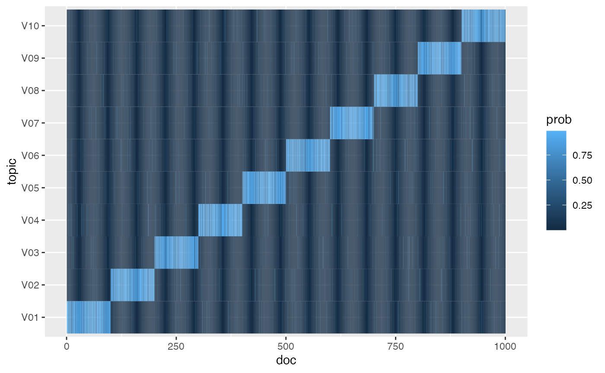
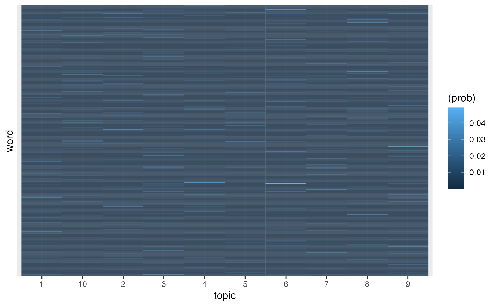
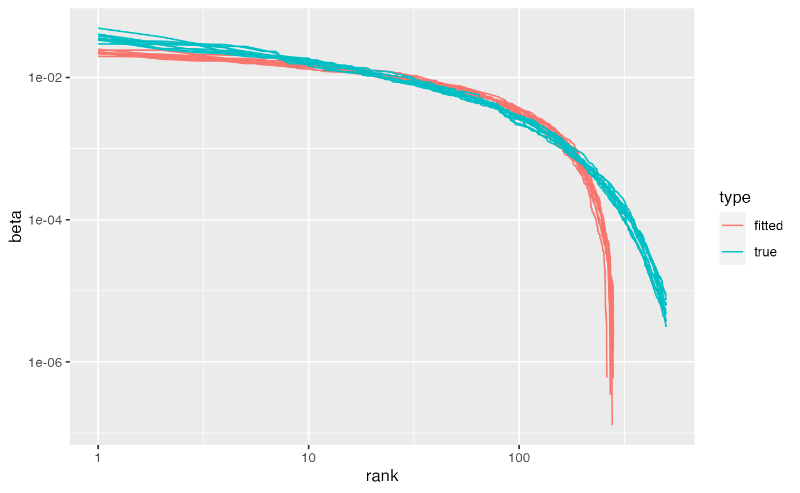
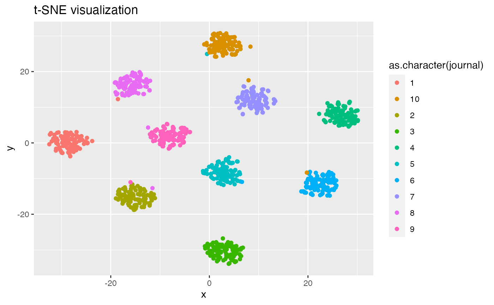
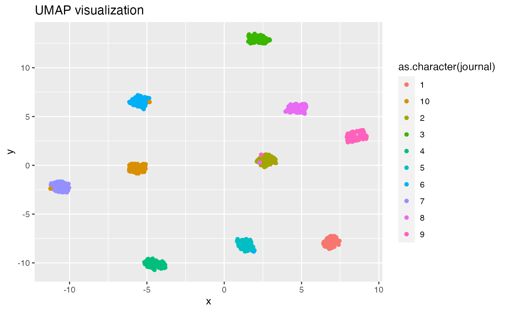

Fitting topic models (and simulating text data) with `tmfast`
Dan Hicks hicks.daniel.j@gmail.com
simulated.RmdIn this vignette, we demonstrate a basic workflow using
tmfastto fit topic models. We also show how the generators
included in the package can be used to create simulated text data. The
vignette assumes you’re already familiar with topic models, and
specifically the latent dirichlet allocation (LDA) data generation
model, along with PCA and varimax. The tmfast package was
inspired by @RoheVintageFactorAnalysis2020, who provide the
mathematical justification for treating topic modeling as
varimax-rotated PCA, but somewhat finicky and incomplete software for
actually fitting models using this approach.
## ── Attaching core tidyverse packages ──────────────────────── tidyverse 2.0.0 ──
## ✔ dplyr 1.1.2 ✔ readr 2.1.4
## ✔ forcats 1.0.0 ✔ stringr 1.5.0
## ✔ ggplot2 3.4.2 ✔ tibble 3.2.1
## ✔ lubridate 1.9.2 ✔ tidyr 1.3.0
## ✔ purrr 1.0.2
## ── Conflicts ────────────────────────────────────────── tidyverse_conflicts() ──
## ✖ dplyr::filter() masks stats::filter()
## ✖ dplyr::lag() masks stats::lag()
## ℹ Use the conflicted package (<http://conflicted.r-lib.org/>) to force all conflicts to become errors
library(lpSolve) # For matching fitted and trust topics
library(tictoc) # For checking timing
library(tmfast)##
## Attaching package: 'tmfast'
##
## The following object is masked from 'package:stats':
##
## loadings## stm v1.3.6.1 successfully loaded. See ?stm for help.
## Papers, resources, and other materials at structuraltopicmodel.comSimulated text data
Simulation parameters
We create simulated text data following the data-generating process assumed by LDA. Specifically, each document will be generated from one of several “journals.” Each journal corresponds to a topic, and vice versa, in that documents from journal \(j\) will tend to have a much greater mixture (probably) of topic \(j\) than the other topics.
We first specify the number of topics/journals k, and
the number of documents to draw from each journal Mj, for a
total of M = Mj * k documents in the corpus. We also
specify the length of the vocabulary (total unique words) as a multiple
of the total number of documents M. Document lengths are
generated using a negative binomial distribution, using the size-mean
parameterization. Per ?NegBinomial, the standard deviation
of document lengths in this parameterization is \(\sqrt{\mu +
\frac{\mu^2}{\mathrm{size}}}\)
k = 10 # Num. topics / journals
Mj = 100 # Num. documents per journal
M = Mj*k # Total corpus size
vocab = M # Vocabulary length
## Negative binomial distribution of doc lengths
size = 10 # Size and mean
mu = 300
sqrt(mu + mu^2/size) # Resulting SD of document sizes## [1] 96.43651
## Dirichlet distributions for topic-docs and word-topics
topic_peak = .8
topic_scale = 10
word_beta = 0.1Because the simulations involve drawing samples using a RNG, we first set a seed.
set.seed(2022-06-19)Draw true topic distributions
We first generate the true topic-document distributions \(p(\theta = t | \mathrm{doc}_m)\), often
simply called \(\theta\) or \(\gamma\). In this vignette we use \(\theta\) for the true distribution and
\(\gamma\) for the fitted distribution
in the topic model. Each document’s \(\theta\) is sampled from a Dirichlet
distribution (rdirichlet()), with the parameter \(\mathbf{\alpha}\) corresponding to the
document’s journal \(j\). The variable
theta is a M by k matrix;
theta_df is a tidy representation with columns
doc, topic, and prob. The
visualization confirms that documents are generally most strongly
associated with the corresponding topics, though with some noise.
## Journal-specific alpha, with a peak value (.8 by default) and uniform otherwise
theta = map(1:k,
~rdirichlet(Mj, peak_alpha(k, .x,
peak = topic_peak,
scale = topic_scale))) |>
reduce(rbind)
theta_df = theta |>
as_tibble(rownames = 'doc',
.name_repair = tmfast:::make_colnames) |>
mutate(doc = as.integer(doc)) |>
pivot_longer(starts_with('V'),
names_to = 'topic',
values_to = 'prob')
ggplot(theta_df, aes(doc, topic, fill = prob)) +
geom_tile()
Draw true word distributions
Next we generate the true word-topic distributions \(p(\phi = w | \theta = t)\), often designed as either \(\phi\) or \(\beta\). We use \(\phi\) for the true distribution and \(\beta\) for the fitted distribution. We sample these distributions from a symmetric Dirichlet distribution over the length of the vocabulary with \(\alpha = .01\). Tile and Zipfian (probability vs. rank on a log-log scale) plots confirm these distributions are working correctly.
## phi_j: Word distribution for topic j
phi = rdirichlet(k, word_beta, k = vocab)
## Word distributions
phi |>
as_tibble(rownames = 'topic',
.name_repair = tmfast:::make_colnames) |>
pivot_longer(starts_with('V'),
names_to = 'word',
values_to = 'prob') |>
ggplot(aes(topic, word, fill = (prob))) +
geom_tile() +
scale_y_discrete(breaks = NULL)
## Zipf's law
phi |>
as_tibble(rownames = 'topic',
.name_repair = \(x)(str_c('word', 1:vocab))) |>
pivot_longer(starts_with('word'),
names_to = 'word',
values_to = 'prob') |>
group_by(topic) |>
mutate(rank = rank(desc(prob))) |>
arrange(topic, rank) |>
filter(rank < vocab/2) |>
ggplot(aes(rank, prob, color = topic)) +
geom_line() +
scale_x_log10() +
scale_y_log10()Document lengths
Again, document lengths are drawn from a negative binomial distribution.
## Min. 1st Qu. Median Mean 3rd Qu. Max.
## 93.0 240.8 300.5 308.6 364.5 774.0
sd(N)## [1] 95.1555
hist(N)Draw corpus
Finally we draw the corpus, the observed word counts for each
document. This is the most time-consuming step in this script, much
slower than actually fitting the topic model. Experimenting with this
simulation, we found that log1p() scaling of the word
counts produced better results than other scaling techniques (eg,
dividing by the total length of each document, scaling words by their
standard deviation) for accounting for radical differences in document
length.
tic()
corpus = draw_corpus(N, theta, phi)
toc()## 27.636 sec elapsedFit the topic model
Fitting the topic model is extremely fast. Note that we can request
multiple numbers of topics in a single call. Under the hood, we first
cast the document-term matrix (which is already in a sparse
representation) to a sparse matrix. Then we extract the maximum number
of desired principal components using
irlba::prcomp_irlba(), centering but not scaling the logged
word counts. (Experiments with this simulation indicated that scaling
makes it more difficult to construct probability distributions later.)
irlba implements an
extremely efficient algorithm for partial singular value
decompositions of large sparse matrices. Next we use
stats:varimax() to construct a preliminary varimax rotation
of the principal components. Because the direction of factors is
arbitrary as far as varimax is concerned, but meaningful when we convert
things to probability distributions, we check the skew of each factor’s
loadings in the preliminary fit, and reverse the factors with negative
skew (long left tails).1
## 0.767 sec elapsedThe object returned by tmfast() has a simple structure.
totalvar and sdev come from the PCA step,
giving the total variance across all feature variables and the standard
deviation of each extracted principal component. (Note that these PCs do
not generally correspond to the varimax-rotated factors/topics.)
n contains the sizes (number of factors/topics) fitted for
the models, and varimaxes contains the varimax fit for each
value of n. The varimax objects each contain three
matrices, the rotated loadings (word-topics), the rotation
matrix rotmat, and the rotated scores
(document-topics).
str(fitted, max.level = 2L)## List of 9
## $ totalvar: num 138
## $ sdev : num [1:20] 3.26 3.06 3.01 2.97 2.93 ...
## $ rows : chr [1:1000] "1" "2" "3" "4" ...
## $ cols : chr [1:999] "5" "7" "8" "11" ...
## $ center : Named num [1:999] 0.4016 0.0943 0.4254 0.2396 0.4093 ...
## ..- attr(*, "names")= chr [1:999] "5" "7" "8" "11" ...
## $ scale : logi FALSE
## $ rotation: num [1:999, 1:20] -0.00112 0.02725 0.01223 0.00457 -0.00883 ...
## ..- attr(*, "dimnames")=List of 2
## $ n : num [1:4] 2 3 10 20
## $ varimax :List of 4
## ..$ 2 :List of 3
## ..$ 3 :List of 3
## ..$ 10:List of 3
## ..$ 20:List of 3
## - attr(*, "class")= chr [1:3] "tmfast" "varimaxes" "list"
str(fitted$varimax$`5`)## NULLBecause the model contains a sdev component,
screeplot() works out of the box. Note that the first \(k\) PCs have much higher variance than the
others, and often the \(k\)th PC is
somewhat lower than the first \(k-1\).
This reflects the highly simplified structure of the simulated data.
Real datasets often have a much more gradual decline in the screeplot,
likely reflecting the complex hierarchy of topics in actual
documents.
screeplot(fitted)It’s also straightforward to calculate the share of total variance covered by successive principal components. Experimenting with this simulation, when some documents are much larger than others, \(k\) PCs might cover less than half of the total variance. In this case it covers about 65%. Again, note that the rotated varimax factors don’t correspond to the principal components; but the total covered variance remains the same.
## Variance coverage?
cumsum(fitted$sdev^2) / fitted$totalvar## [1] 0.07689789 0.14466433 0.21018176 0.27420309 0.33636478 0.39492291
## [7] 0.45196354 0.50563725 0.55705654 0.57380104 0.57606900 0.57828256
## [13] 0.58048004 0.58264465 0.58479395 0.58691426 0.58902127 0.59107016
## [19] 0.59311409 0.59514063
data.frame(PC = 1:length(fitted$sdev),
cum_var = cumsum(fitted$sdev^2) / fitted$totalvar) |>
ggplot(aes(PC, cum_var)) +
geom_line() +
geom_point()Fitting a conventional topic model (stm)
For comparison, we’ll also fit a conventional topic model using the
stm package. To address the challenge of picking a number
of topics, it will conduct a topic estimation process when passed
K = 0. With the simulation parameters and the random seed
used here, this process takes almost 12 seconds and produces a model
with 33 topics. We therefore do not automatically run the next
chunk.
tic()
corpus |>
cast_sparse(doc, word, n) |>
stm(K = 0, verbose = FALSE)
toc()Setting K = k gives us a fitted topic model in a few
seconds, about an order of magnitude slower than
tmfast().
tic()
fitted_stm = corpus |>
cast_sparse(doc, word, n) |>
stm(K = k, verbose = FALSE)
toc()## 4.67 sec elapsedAssessing accuracy
Using simulated data with true word-topic and topic-document distributions lets us check the accuracy of varimax-based topic models. Here we’ll develop a method proposed by Malaterre and Lareau (2022), comparing distributions using Hellinger distance. For discrete probability distributions \(p, q\) over the same space \(X\), the Hellinger distance is given by \[ d(p,q) = \frac{1}{\sqrt{2}} \sqrt{\sum_{x \in X} (\sqrt{p(x)} - \sqrt{q(x)})^2} = \frac{1}{\sqrt{2}} \lVert \sqrt p - \sqrt q \rVert_2.\] The last equation means that the Hellinger distance is the Euclidean (\(L^2\)-norm) distance between the square roots of the distributions. Some authors working with topic models sometimes compare distributions using the \(L^2\)-norm of the distributions themselves, without the square root. But this approach is flawed, since probability distributions can have different lengths in the \(L^2\) norm. (For example, the distribution \(\left< 1, 0\right>\) has \(L^2\) length 1, while \(\left< \frac{1}{2}, \frac{1}{2} \right>\) has \(L^2\) length approximately 1.19.)2
Hellinger distance satisfies the equation \[ 1 - d^2(p, q) = \sum_{x \in X} \sqrt{p(x)q(x)}.
\] When working with topic models, we’re interested in pairwise
sets of Hellinger distances, either between all pairs of distributions
from a single set (for example, the topic distributions for each
document, as used in “discursive space” analysis [cite and
xref]) or two sets (for example, comparing fitted vs. true
word-topic distributions, as in this section). Working with two sets of
distributions \(P = \{p_i | i \in I\}\)
and \(Q = \{q_j | j \in J\}\), the
right-hand side of the last equation is equivalent to a matrix
multiplication.3 The hellinger() function
provides S3 methods for calculating Hellinger pairwise distances given a
single dataframe, single matrix, or two dataframes or matrices.
First, however, we need to extract the word-topic distributions.
tmfast provides a tidy() method, following the
pattern of the topicmodel tidiers in tidytext. Unlike other
topic models, tmfast objects can contain models for
multiple different values of \(k\)
(numbers of topics). So, in the second argument to tidy(),
we need to specify which number of topics we want. The third argument
specifies the desired set of distributions, either word-topics
('beta') or topic-documents ('gamma').
## beta: fitted varimax loadings, transformed to probability distributions
beta = tidy(fitted, k, 'beta')Word-topic distributions correspond to the varimax factor loadings. These loadings can take any real value. To convert them to probability distributions, within each factor (topic), we trim negative values to 0 and divide each loading by the sum of all loadings. The Zipfian plot below compares the fitted and true word-topic distributions. Consistently across experiments with this simulation, fitted distributions started off a little flatter, then dropped sharply after about 100 words. In other words, the varimax topic model highlights a relatively long list of characteristic words for each topic — the actual distributions have fewer characteristic words — and then ignores the other words.
## Compare Zipfian distributions
bind_rows({beta |>
mutate(type = 'fitted')},
{phi |>
t() |>
as_tibble(rownames = 'token',
.name_repair = tmfast:::make_colnames) |>
pivot_longer(starts_with('V'),
names_to = 'topic',
values_to = 'beta') |>
mutate(beta_rn = beta) |>
mutate(type = 'true')}
) |>
group_by(type, topic) |>
mutate(rank = rank(desc(beta))) |>
arrange(type, topic, rank) |>
filter(rank < vocab/2) |>
ggplot(aes(rank, beta, color = type,
group = interaction(topic, type))) +
geom_line() +
scale_y_log10() +
scale_x_log10()
The Zipfian distribution doesn’t tell us which fitted topics might
correspond to which true topics. For that, following Malaterre and
Lareau, we’ll use pairwise Hellinger distances. There’s one
complication, however. The parameters chosen for this simulation
typically end up not drawing some of the words from the vocabulary, and
they don’t end up in the same order as the true word-topic matrix
phi. Fortunately words are represented as the integers
1:vocab, so it’s relatively painless to put them back in
order and fill in the gaps (setting the probability for the missing
words to be 0 across all topics). In the pipe below, we first fix these
issues with the words, widen the long dataframe, convert it to a matrix,
and then calculate pairwise Hellinger distances with the true word-topic
matrix phi.
## Hellinger distance of word-topic distributions
beta_mx = beta |>
## Fix order of words
mutate(token = as.integer(token)) |>
arrange(token) |>
## And dropped words
complete(token = 1:vocab, topic, fill = list(beta = 0)) |>
pivot_wider(names_from = 'topic',
values_from = 'beta', values_fill = 0,
names_sort = TRUE) |>
# select(-`NA`) |>
## Coerce to matrix
column_to_rownames('token') |>
as.matrix()
hellinger(phi, t(beta_mx))## V01 V02 V03 V04 V05 V06 V07
## [1,] 0.9031738 0.1637336 0.9165058 0.9123347 0.8751537 0.8995845 0.9036184
## [2,] 0.9059649 0.8784121 0.9101200 0.8988053 0.1568935 0.9154690 0.8912032
## [3,] 0.9109254 0.8784830 0.9078316 0.8766395 0.8950844 0.8955629 0.8863298
## [4,] 0.9364565 0.9175881 0.1665250 0.9072348 0.9071975 0.8779525 0.9121768
## [5,] 0.8953244 0.9050252 0.9027020 0.8977285 0.8866189 0.9016970 0.1828639
## [6,] 0.9229747 0.9117772 0.8779031 0.8931918 0.9100060 0.1807501 0.9014234
## [7,] 0.1642187 0.9068759 0.9378145 0.8921973 0.9020294 0.9310713 0.8995111
## [8,] 0.9146167 0.8876726 0.9160216 0.8977089 0.9003917 0.9068250 0.8869320
## [9,] 0.8956926 0.9145803 0.9014559 0.1682888 0.8991201 0.9032983 0.8980827
## [10,] 0.9112636 0.9152296 0.9052323 0.8935218 0.9000401 0.8869707 0.8837047
## V08 V09 V10
## [1,] 0.9223213 0.8852931 0.8929746
## [2,] 0.9044976 0.8865806 0.9026687
## [3,] 0.9139487 0.1770633 0.9222647
## [4,] 0.9077645 0.9109467 0.9142646
## [5,] 0.8797781 0.8815338 0.8907767
## [6,] 0.8961334 0.8931672 0.9064453
## [7,] 0.9032734 0.9106445 0.9160885
## [8,] 0.8796820 0.9247945 0.1708753
## [9,] 0.8968698 0.8872700 0.9004598
## [10,] 0.1616073 0.9255980 0.8824513In this distance matrix, the rows are the true topics and the columns
are the fitted topics. Low values include that the topics are closer to
each other. It’s clear that the topics don’t match up perfectly —
typically the minimum in each row is about 0.17 — but there is a clear
minimum. We treat this as a linear assignment problem, which is solved
rapidly using the lpSolve package. The solution — which
matches true to fitted topics — can then be used as a rotation with both
the loadings and scores (topic-document distributions). After rotating,
the true-fitted pairs are on the diagonal of the Hellinger distance
matrix, making it easy to extract and summarize the quality of the
fit.
## Use lpSolve to match fitted topics to true topics
dist = hellinger(phi, t(beta_mx))
soln = lp.assign(dist)
soln$solution## [,1] [,2] [,3] [,4] [,5] [,6] [,7] [,8] [,9] [,10]
## [1,] 0 1 0 0 0 0 0 0 0 0
## [2,] 0 0 0 0 1 0 0 0 0 0
## [3,] 0 0 0 0 0 0 0 0 1 0
## [4,] 0 0 1 0 0 0 0 0 0 0
## [5,] 0 0 0 0 0 0 1 0 0 0
## [6,] 0 0 0 0 0 1 0 0 0 0
## [7,] 1 0 0 0 0 0 0 0 0 0
## [8,] 0 0 0 0 0 0 0 0 0 1
## [9,] 0 0 0 1 0 0 0 0 0 0
## [10,] 0 0 0 0 0 0 0 1 0 0## [,1] [,2] [,3] [,4] [,5] [,6] [,7]
## [1,] 0.1637336 0.8751537 0.8852931 0.9165058 0.9036184 0.8995845 0.9031738
## [2,] 0.8784121 0.1568935 0.8865806 0.9101200 0.8912032 0.9154690 0.9059649
## [3,] 0.8784830 0.8950844 0.1770633 0.9078316 0.8863298 0.8955629 0.9109254
## [4,] 0.9175881 0.9071975 0.9109467 0.1665250 0.9121768 0.8779525 0.9364565
## [5,] 0.9050252 0.8866189 0.8815338 0.9027020 0.1828639 0.9016970 0.8953244
## [6,] 0.9117772 0.9100060 0.8931672 0.8779031 0.9014234 0.1807501 0.9229747
## [7,] 0.9068759 0.9020294 0.9106445 0.9378145 0.8995111 0.9310713 0.1642187
## [8,] 0.8876726 0.9003917 0.9247945 0.9160216 0.8869320 0.9068250 0.9146167
## [9,] 0.9145803 0.8991201 0.8872700 0.9014559 0.8980827 0.9032983 0.8956926
## [10,] 0.9152296 0.9000401 0.9255980 0.9052323 0.8837047 0.8869707 0.9112636
## [,8] [,9] [,10]
## [1,] 0.8929746 0.9123347 0.9223213
## [2,] 0.9026687 0.8988053 0.9044976
## [3,] 0.9222647 0.8766395 0.9139487
## [4,] 0.9142646 0.9072348 0.9077645
## [5,] 0.8907767 0.8977285 0.8797781
## [6,] 0.9064453 0.8931918 0.8961334
## [7,] 0.9160885 0.8921973 0.9032734
## [8,] 0.1708753 0.8977089 0.8796820
## [9,] 0.9004598 0.1682888 0.8968698
## [10,] 0.8824513 0.8935218 0.1616073## Min. 1st Qu. Median Mean 3rd Qu. Max.
## 0.1569 0.1639 0.1674 0.1693 0.1755 0.1829And we do the same thing with the conventional topic model. It performs somewhat better, with a median Hellinger distance of about 0.08. But again, it’s significantly slower.
beta_stm_mx = tidy(fitted_stm, matrix = 'beta') |>
## Fix order of words
mutate(term = as.integer(term)) |>
arrange(term) |>
## And dropped words
complete(term = 1:vocab, topic, fill = list(beta = 0)) |>
pivot_wider(names_from = 'topic',
values_from = 'beta', values_fill = 0,
names_sort = TRUE) |>
# select(-`NA`) |>
## Coerce to matrix
column_to_rownames('term') |>
as.matrix()
hellinger(phi, t(beta_stm_mx))## 1 2 3 4 5 6
## [1,] 0.08551476 0.84250732 0.84248134 0.88213508 0.87444870 0.87157834
## [2,] 0.84329922 0.85367721 0.08226114 0.87003933 0.85853111 0.86964720
## [3,] 0.84814338 0.08498287 0.84966302 0.85873155 0.83485457 0.87730942
## [4,] 0.88728074 0.86458774 0.87596766 0.08716275 0.86137846 0.90341396
## [5,] 0.86509433 0.84154766 0.84198078 0.86693020 0.85183981 0.85492194
## [6,] 0.89275208 0.85457918 0.87148785 0.83690625 0.84770470 0.89097927
## [7,] 0.87604529 0.87475670 0.86935797 0.89497509 0.86136575 0.08427024
## [8,] 0.86179446 0.88513627 0.87104990 0.87765133 0.85763362 0.88206046
## [9,] 0.88272319 0.84014092 0.86831204 0.85799803 0.09038475 0.86010142
## [10,] 0.88217135 0.87848592 0.86296463 0.86880249 0.85155013 0.87344130
## 7 8 9 10
## [1,] 0.85051526 0.86539658 0.87856817 0.86805865
## [2,] 0.86158904 0.87025988 0.85982995 0.85353582
## [3,] 0.88224633 0.85827133 0.87289308 0.84502101
## [4,] 0.87295764 0.83661054 0.86684110 0.87271693
## [5,] 0.84603547 0.86047913 0.83835750 0.07902295
## [6,] 0.86282228 0.08880347 0.85411829 0.86252234
## [7,] 0.87474253 0.89536072 0.86677860 0.85727623
## [8,] 0.09267689 0.87054310 0.84452997 0.85300612
## [9,] 0.85178500 0.85313348 0.85250779 0.85785724
## [10,] 0.84600884 0.85587004 0.09097089 0.84596278
rotation_stm = hellinger(phi, t(beta_stm_mx)) |>
lp.assign() |>
magrittr::extract2('solution')
hellinger(phi, rotation_stm %*% t(beta_stm_mx)) |>
diag() |>
summary()## Min. 1st Qu. Median Mean 3rd Qu. Max.
## 0.07902 0.08445 0.08634 0.08661 0.08999 0.09268The tidied word-topic distributions can be used in standard ways for further analysis, such as a Silge plot of the highest probability words for each topic. But because the “words” in this simulation are just integers, and not semantically meaningful, we don’t construct such a plot here.
{kind=link}
Topic-document distributions
We extract topic-document distributions using the same
tidy() function, specifying the matrix gamma
and including the rotation above to align the fitted and true topics.4 Tile and
parallel coordinates plots can be used to visualize all of the
topic-document distributions. These show that the varimax topic models
successfully recover the overall association of each document’s journal
with a distinctive topic.
gamma_df = tidy(fitted, k, 'gamma',
rotation = soln$solution)## Warning in tidy.tmfast(fitted, k, "gamma", rotation = soln$solution): Rotating
## scores
gamma_df |>
mutate(document = as.integer(document)) |>
ggplot(aes(document, topic, fill = gamma)) +
geom_raster() +
scale_x_continuous(breaks = NULL)
gamma_df |>
mutate(document = as.integer(document),
journal = (document - 1) %/% Mj + 1) |>
ggplot(aes(topic, gamma,
group = document, color = as.factor(journal))) +
geom_line(alpha = .25) +
facet_wrap(vars(journal), scales = 'free_x') +
scale_color_discrete(guide = 'none')However, the fitted topic-document distributions are flatter than the
true ones. Consider the true and fitted distributions for document 1.
Compared to the true distribution, the fitted distribution has a
somewhat lower probability for topic V01 and a somewhat
higher probability for the other topics.
ggplot(mapping = aes(topic, group = 1L)) +
geom_line(mapping = aes(y = theta, color = 'true'),
data = tibble(theta = theta[1,],
topic = tmfast:::make_colnames(1:k))) +
geom_line(mapping = aes(y = gamma, color = 'fitted'),
data = filter(gamma_df, document == '1'))This flatter distribution corresponds to greater entropy. In this simulation, the entropy of the fitted distributions are about 1 bit greater than those of the true distributions. This discrepancy tends to become worse with greater values of \(k\).
## Min. 1st Qu. Median Mean 3rd Qu. Max.
## 0.1006 0.6614 0.9715 1.0100 1.3311 2.5821
tidy(fitted, k, 'gamma') |>
group_by(document) |>
summarize(H = entropy(gamma)) |>
pull(H) |>
summary()## Min. 1st Qu. Median Mean 3rd Qu. Max.
## 0.8486 1.7040 1.9319 1.9129 2.1592 2.7673To mitigate this problem, we add an optional renormalization step when converting document scores to topic-document distributions. Given a discrete probability distribution \(P\) with components \(p_i\) and entropy \(H\), and a parameter \(\beta\), we can define a new distribution \(P'\) with components
\[ p'_i = \frac{p_i^\beta}{\sum_i p_i^\beta} = \frac{p_i^\beta}{Z}\]
which has entropy
\[ H' = \frac{1}{Z} \sum_i [p_i^\beta \beta \log p_i] - \log Z.\]
That is, we can choose a parameter \(\beta\) that renormalizes \(P\) to achieve a target entropy \(H'\). In LDA, the target entropy is the
expected entropy for topic-document distributions drawn from the
Dirichlet prior. tmfast provides convenience functions for
calculating this expected entropy; compare this to the mean entropy of
the distributions in theta above. In actual
applications, where the Dirichlet prior is an idealization, choosing
\(\alpha\) to set the target entropy is
an important researcher degree of freedom. It is equivalent to
choosing prior parameters in other topic modeling packages.
peak_alpha(k, 1, topic_peak, topic_scale)## [1] 8.0000000 0.2222222 0.2222222 0.2222222 0.2222222 0.2222222 0.2222222
## [8] 0.2222222 0.2222222 0.2222222
expected_entropy(peak_alpha(k, 1, topic_peak, topic_scale))## [1] 0.997604Since solving the equation for \(H'\) for \(\beta\) requires numerical optimization,
it’s inefficient to do this every time we call tidy(),
especially with large corpora. Instead,
tmfast::target_power() is used to run this optimization
once, and then return the mean value across all documents. We then use
this single value of \(\beta\) in all
future calls to tidy().
gamma_power = tidy(fitted, k, 'gamma') |>
target_power(document, gamma,
expected_entropy(peak_alpha(k,
1,
topic_peak,
topic_scale)))
gamma_power## [1] 1.539377The renormalized topic-document distributions have closer entropy to
theta. The keep_original argument lets us compare the
original and renormalized distributions.
gamma_df = tidy(fitted, k, 'gamma',
rotation = soln$solution,
exponent = gamma_power,
keep_original = TRUE)## Warning in tidy.tmfast(fitted, k, "gamma", rotation = soln$solution, exponent =
## gamma_power, : Rotating scores
gamma_df |>
group_by(document) |>
summarize(across(c(gamma, gamma_rn), entropy)) |>
summarize(across(c(gamma, gamma_rn), mean))## # A tibble: 1 × 2
## gamma gamma_rn
## <dbl> <dbl>
## 1 1.91 1.03We can now assess accuracy of the topic-document distributions. Above
we used the hellinger() method for two matrices. The method
for two dataframes requires specifying the id, topic, and probability
columns. The tile plot shows that the true and fitted topics are aligned
(because we used the rotation when extracting gamma_df
above), and so again we can get an overall summary from the diagonal.
Without renormalization, in the current simulation the mean Hellinger
distance is 0.24 — not too bad, but perhaps larger than one would like.
With larger values of \(k\), this
accuracy increases significantly. Renormalization keeps the mean
distance around 0.13, slightly better the the word-topic
distributions.
## w/o renormalization, mean distance is .24
hellinger(theta_df, doc,
topicsdf2 = gamma_df, id2 = document,
prob2 = gamma, df = FALSE) |>
diag() |>
summary()## Min. 1st Qu. Median Mean 3rd Qu. Max.
## 0.08499 0.20131 0.23733 0.23770 0.27244 0.37585
## w/ renormalization, mean distance drops to .13
doc_compare = hellinger(theta_df, doc,
topicsdf2 = gamma_df, id2 = document,
prob2 = gamma_rn, df = TRUE)
doc_compare |>
filter(doc == document) |>
pull(dist) |>
summary()## Min. 1st Qu. Median Mean 3rd Qu. Max.
## 0.04808 0.10195 0.12378 0.12518 0.14564 0.24868
ggplot(doc_compare, aes(as.integer(doc),
as.integer(document),
fill = 1 - dist)) +
geom_raster() +
scale_x_discrete(breaks = NULL, name = 'true') +
scale_y_discrete(breaks = NULL, name = 'fitted')STM has a slightly closer fit, with a mean Hellinger distance of 0.08.
fitted_stm_gamma = tidy(fitted_stm, matrix = 'gamma') |>
pivot_wider(names_from = 'topic',
values_from = 'gamma') |>
column_to_rownames('document') |>
as.matrix()
hellinger(theta, fitted_stm_gamma %*% t(rotation_stm)) |>
diag() |>
summary()## Min. 1st Qu. Median Mean 3rd Qu. Max.
## 0.03216 0.07148 0.08638 0.08823 0.10260 0.19884Discursive space visualization using t-SNE and UMAP
Hicks (2021) proposed using topic models and Hellinger distance to
analyze the relative position of documents in “discursive space.” That
paper used the t-SNE dimension-reduction algorithm to produce a 2D
visualization of Hellinger distances. The UMAP algorithm is also
popular, and is believed to
do better than t-SNE at preserving global structure. tmfast
provides functions tsne() and umap() to
efficiently produce such visualizations. Note that the t-SNE algorithm
involves further random number draws (I believe to set the initial
positions of the points), so repeatedly running this next chunk will
produce superficially different visualizations.
tsne(fitted, k) |>
mutate(journal = (as.integer(document)-1) %/% Mj + 1) |>
ggplot(aes(x, y, color = as.character(journal))) +
geom_point() +
labs(title = 't-SNE visualization')
umap(fitted, k, df = TRUE) |>
mutate(journal = (as.integer(document)-1) %/% Mj + 1) |>
ggplot(aes(x, y, color = as.character(journal))) +
geom_point() +
labs(title = 'UMAP visualization')